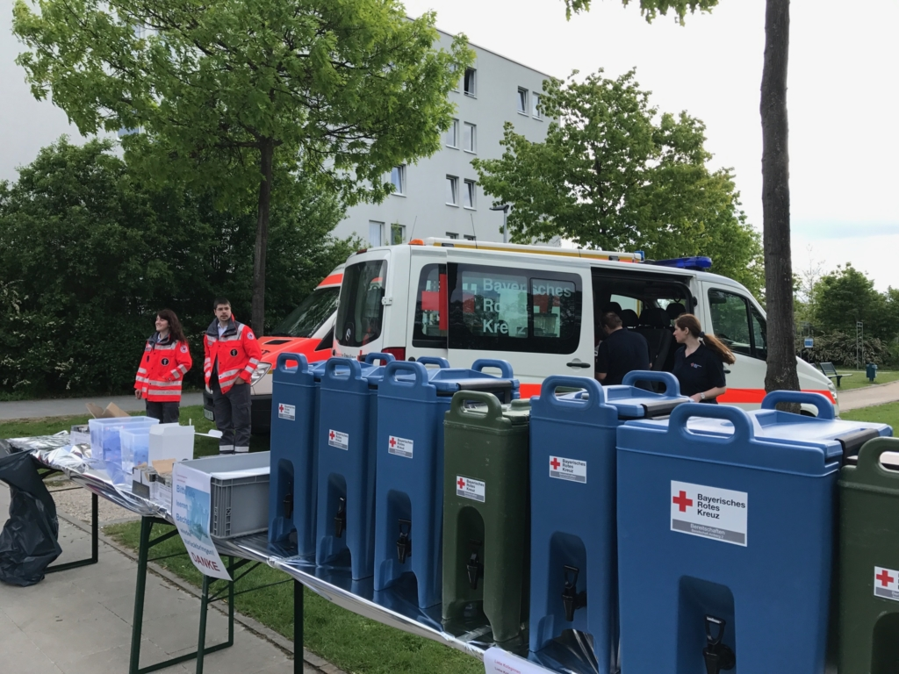

Katastrophenschutz und Mobilitätshilfe – das sind die Kernkompetenzen der BRK Bereitschaft Amberg 2. Nicht immer müssen bei Unglücken Verletzte versorgt werden. Auch Unverletzte sind meistens beteiligt und sind dringend auf Hilfe angewiesen.
Die Einsatzkräfte der BRK Bereitschaft Amberg 2 kommen hier mit ihren Schnelleinsatzgruppen Betreuung und Verpflegung zum Einsatz. Bei längeren Einsätzen stehen sie ebenso für die Verpflegung der Einsatzkräfte zur Verfügung und sind rund um die Uhr für den Katastrophenschutz alarmierbar.